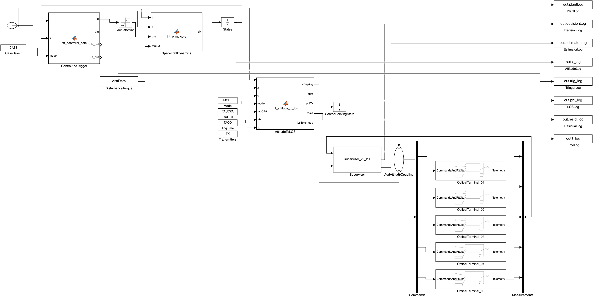
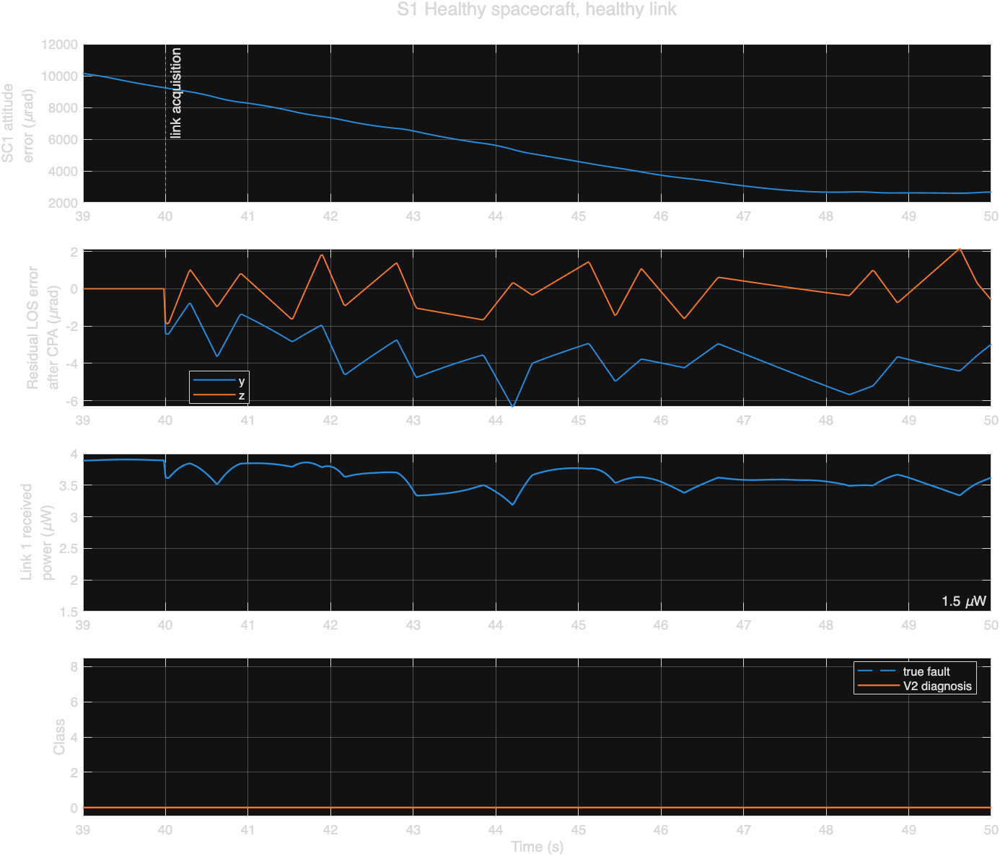
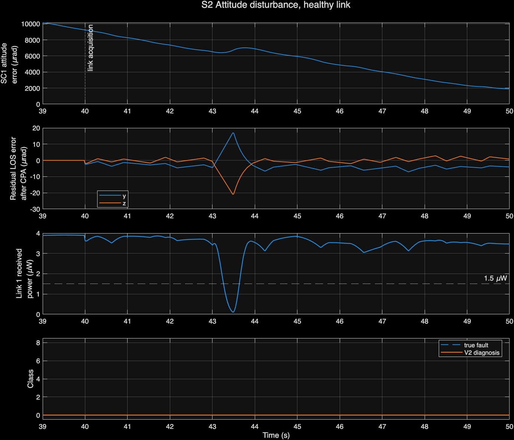
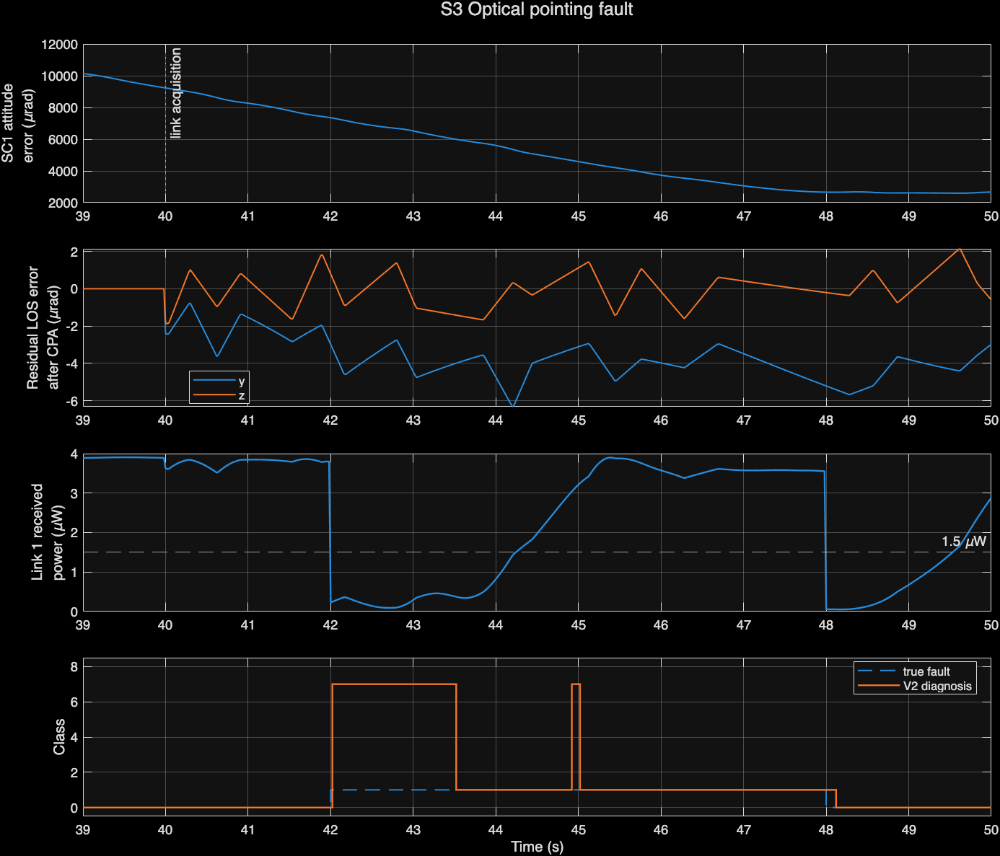
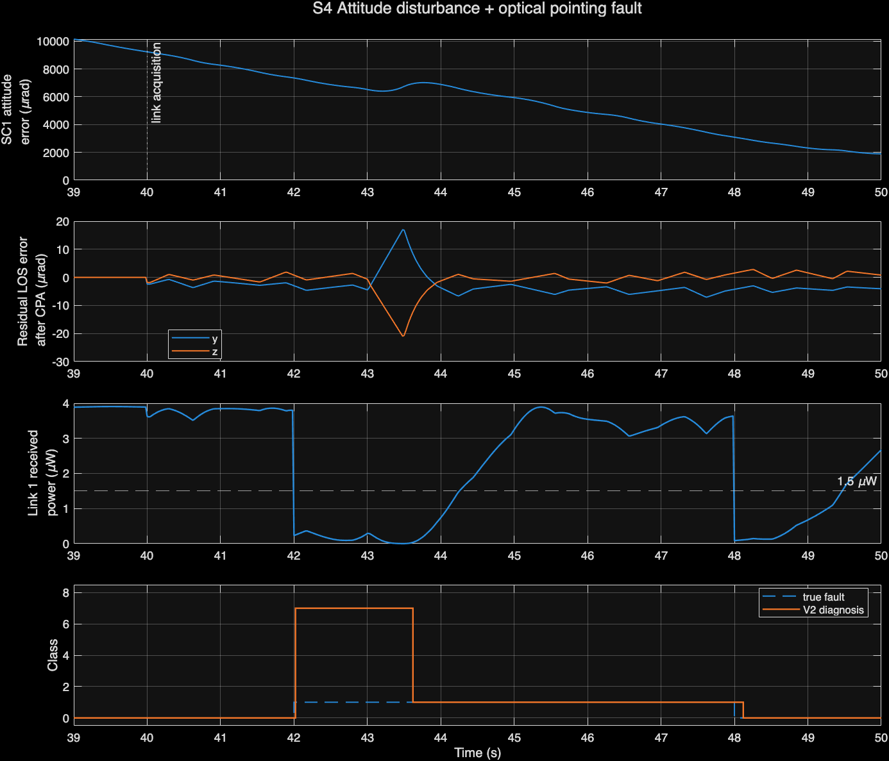
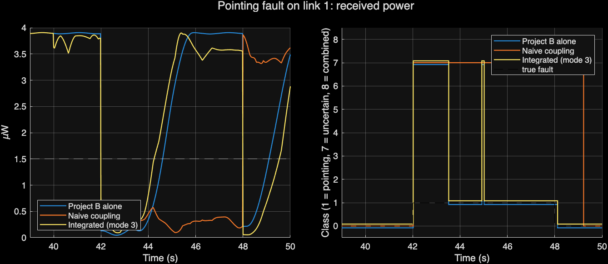

Spacecraft attitude control meets laser link recovery
The formation attitude controller (event-triggered and self-triggered, fault-tolerant SMC for four spacecraft) and the optical link supervisor (V2 diagnosis, probing, correction, rollback, verification and rerouting) run together in one Simulink model. They're joined at the physical point where they meet. The laser terminal is bolted to the spacecraft, so the spacecraft's attitude error tilts the beam.
The laser beam is only 20 µrad wide, so without coarse pointing the link never closes.
A first-order coarse-pointing stage (τ = 5 ms) leaves only a small residual.
A residual the supervisor doesn't know about breaks diagnosis. Sending it as telemetry restores it.
All of that spacecraft's links fail together, so rerouting can't help.
Attitude Case 3 (self-triggered), 4 satellites, seed 101. Optical faults on link 1 (spacecraft 1 → 2) from 42 to 48 s. Link scoring over 41–50 s, using Project B's original metric code.
One equation joins the two projects
Each optical link takes its transmitting spacecraft's attitude error from Project A, converts it to a rotation vector, and projects it onto the terminal's two pointing axes. A minimal coarse-pointing stage follows that error, and only its tracking residual d reaches the fine terminal. There it is added to the terminal model's existing optical-offset input.
Neither controller is edited or overridden. Project A commands body torque and Project B commands the fine-pointing reference. The interface only adds into its own slot. The residual is known onboard (attitude estimate minus coarse-stage position), so the supervisor receives it as telemetry and uses it in its optical power model. It never sees the fault label or the fault schedule.
Timeline: the formation converges from 0 to 40 s, the link is acquired at 40 s, and optical faults run from 42 to 48 s. In S2 and S4 a 0.05 N·m torque pulse hits spacecraft 1 from 43.0 to 43.5 s.
φ = 4·atan(|σₑ|)·σₑ/|σₑ| rotation vector, rad
φ_LOS = [φ_y, φ_z] boresight along body +x
ċ = (φ_LOS − c)/τ_CPA, d = φ_LOS − c coarse pointing, τ = 5 ms
optical error = θ_terminal + δ_fault + d Project B plant, u(9:10)
P = P₀·g·exp(−2|q + d + δ|²/α²) supervisor power model (d as telemetry)

IntegratedFormationOptical.slx. Project A blocks are top left, the interface is in the middle, and Project B's supervisor and five optical terminals are bottom right. Select the image to open it full size.
Four required cases
Each figure shows, from top to bottom: spacecraft 1 attitude error, the beam residual after coarse pointing, link 1 received power, and V2's diagnosis against the real fault.





The same pointing fault three ways. Project B alone recovers. With coupling, but the supervisor unaware of the residual, it never names the fault and the link stays down. The integrated system matches Project B alone.
Independent baselines vs the integrated system
| Run | A case | Residual RMS / max (µrad) | Detection | Named fault | False alarms | Link 1 down | No route | Recovered | A triggers |
|---|---|---|---|---|---|---|---|---|---|
| S1 healthy | 3 | 4.1 / 6.3 | 100% | n/a | 0% | 0.00 s | 0.00 s | n/a | 3084 |
| S2 attitude disturbance | 3 | 6.2 / 27.0 | 100% | n/a | 0% | 0.36 s | 0.36 s | yes | 3103 |
| S3 optical pointing fault | 3 | 4.1 / 6.3 | 98.4% | 73.0% | 4.0% | 3.80 s | 0.00 s | yes | 3084 |
| S4 disturbance + fault | 3 | 6.2 / 27.0 | 98.4% | 73.0% | 4.0% | 3.74 s | 0.36 s | yes | 3103 |
| Project B alone, pointing fault | 3 | 0 | 98.4% | 73.0% | 4.0% | 3.72 s | 0.00 s | yes | 3084 |
| Supervisor not told residual, pointing fault | 3 | 4.1 / 6.3 | 86.2% | 0% | 40.7% | 6.00 s | 0.00 s | no | 3084 |
| No coarse pointing, healthy | 3 | 2915 / 5299 | 0% | n/a | 100% | 9.00 s | 9.00 s | no | 3084 |
| S1, attitude Case 1 (time-driven) | 1 | 1.7 / 2.0 | 100% | n/a | 0% | 0.00 s | 0.00 s | n/a | 2004 |
| S1, attitude Case 2 (event-triggered) | 2 | 12.2 / 26.0 | 100% | n/a | 0% | 2.60 s | 2.58 s | yes | 373 |
Red marks the effects the coupling causes. Event-triggered attitude control (Case 2) saves 88% of attitude updates compared with Case 3, but its larger jitter causes a 2.6 s outage with no optical fault at all. Full table: scenarios.csv.
15 of 15 integration checks passed
Output of int_tests after a clean rebuild with int_run_all (about 2 minutes).
- PASSSignal dimensions and sample times (B logs at 20 ms, A at 1 ms)
- PASSLOS equals the MRP→rotation-vector projection, in rad (difference 0)
- PASSProject A controller triggers on all 4 spacecraft in the coupled run
- PASSProject B supervisor probes, corrects and rolls back (S3)
- PASSAttitude disturbance raises the LOS residual, 6.3 → 27.0 µrad
- PASSDisturbance causes a link-1 outage only when coupled
- PASSNo fault truth or schedule in the decision step or the interface
- PASSInterface output identical with and without an optical fault
- PASSNetwork throughput matches routes recomputed from link availability
- PASSNetwork outage only while all of spacecraft 1's links are down
- PASSProject A trigger counts reproduced with the interface off
- PASSProject A steady-state accuracy reproduced, all cases
- PASSProject B sensor-fault trial reproduced exactly
- PASSProject B pointing trial: detection, false alarms and recovery equal
- PASSIntegrated system keeps the standalone V2 diagnosis under coupling
cd integration int_run_all % baselines → build model → validate → 4 scenarios → 15 checks
What this integration does not cover
- The coupling is one-way. Gimbal reaction torque on the spacecraft is neglected (about 0.1% of the modelled disturbances).
- Only the transmitter's attitude enters each link. Receiver attitude is neglected, which assumes the receiver's field of view is much wider than the beam.
- The boresight is assumed along body +x for every link.
- Coarse pointing is a first-order follower with perfect attitude knowledge and no range or rate limits.
- The model runs at Project A's 1 ms solver. Project B's exact isolation for a pointing fault is 0.730 here vs 0.763 in its own runs; every other checked metric is equal.
- The supervisor used is a three-line copy of V2 that takes the residual as telemetry. Project B's original files are untouched.
- One seed, four satellites, one disturbance profile, only link 1 faulted, and no Monte Carlo sweep yet.
- Simulation only. Nothing here shows flight readiness.